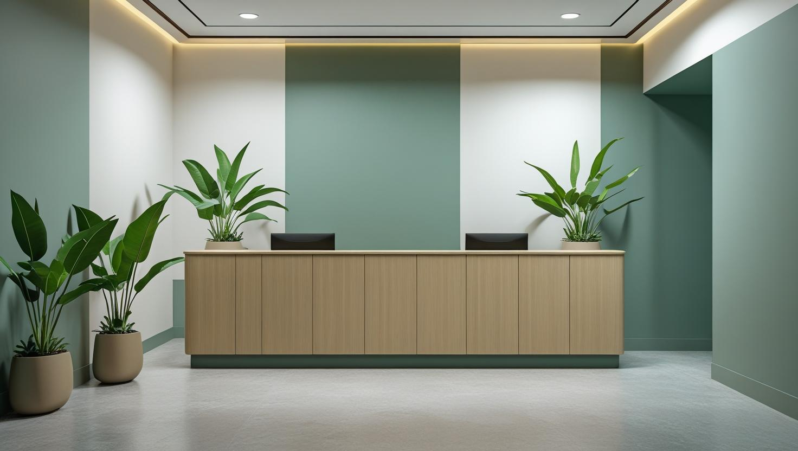

İstanbul Pendik Profesyonel Boya Ustası
Pendik'te merkez ve sahildeki daireler, Kurtköy'deki siteler, çarşıdaki dükkânlar ve kuzeydeki müstakil evler için 20 yıllık tecrübemizle ayrı iş planı hazırlayıp boya badana yapıyoruz.
Pendik'te Boya Badana: Sahil, Merkez ve Kurtköy Farkı
Pendik boyacı talebi ilçenin üç farklı bölgesinden geliyor ve her biri farklı iş tipi getiriyor. Sahil ve merkez çevresinde daha eski daireler, Kurtköy ve Sanayi hattında yeni konut siteleri, havalimanı çevresinde ise iş yeri ve ofis işleri ağırlıkta.
Merkez ve sahil hattındaki eski dairelerde iş genellikle yüzey hazırlığıyla başlıyor: kabarmış eski boyanın raspası, çatlak ve tavan kenarı onarımı. Deniz tarafındaki dairelerde nem, kuzeye bakan odalarda astar seçimini belirleyici hale getiriyor. Kurtköy tarafındaki yeni site dairelerinde ise yüzey düzgün olduğu için iş astar ve kat uygulamasına odaklanıyor.
Pendik boya ustası olarak iş yeri boyamayı da üstleniyoruz. Dükkân ve ofislerde çalışmayı mesai dışına ya da hafta sonuna alarak işletmenin kapalı kalmamasını sağlıyoruz.
Daire, ev, apartman ortak alanı, ofis ve dükkân işlerinin tamamında eşyalı çalışma mümkün.
Hizmetlerimiz

İç Mekan Boyama
Pendik'te iç cephe boyasını daire, apartman ortak alanı ve dükkân için ayrı ayrı planlıyoruz. Dükkânlarda raf ve tezgâh arkası gibi zor ulaşılan duvarlar, dairelerde ise tavan kenarları ve pencere çevresi hazırlığın ağırlık noktasıdır.
- Merkezdeki eski dairelerde kazıma ve tamir
- Kurtköy site dairesinde astar ve son kat
- Dükkânda raf ve tezgâh arkası duvarlar
- Eşyalı evde mobilya ve zemin koruması

Dış Cephe Boyama
Kuzeydeki Ballıca gibi kırsal mahallelerde müstakil evlerin dış cephesi ve bahçe duvarları, merkezde ise cadde üstü dükkân cepheleri ve apartman dış yüzeyleri boyanır. Pendik'te bu yapı tiplerinin erişim ve iskele ihtiyacı birbirinden farklı olduğu için her birini keşifte ayrı değerlendiriyoruz.
- Müstakil ev ve bahçe duvarı boyası
- Cadde üstü dükkân cephesi
- Apartman dış cephesinde sıva onarımı
- Ahşap saçak ve doğrama boyası

Dekoratif Boyama
Dükkân ve mağazalarda dekoratif boya, vitrinden görünen arka duvarda markanın rengini öne çıkarmak için kullanılabilir. Kurtköy'deki site dairelerinde ise sade bir salona karakter katmak için tek duvarda dokulu bir uygulama çoğu zaman yeterlidir.
- Mağaza arka duvarında kurumsal renk
- Vitrin çevresinde dekoratif yüzey
- Site dairesinde dokulu salon duvarı
- Antrede taş görünümlü duvar
Fiyat Tablosu
| Hizmet Türü | Metrekare Fiyatı | Ortalama Süre (100m²) | Garanti |
|---|---|---|---|
| İç Cephe Boyama | 100-200 TL | 2-3 Gün | Uygulama kapsamına göre |
| Dış Cephe Boyama | 180-280 TL | 3-5 Gün | Uygulama kapsamına göre |
| Dekoratif Boyama | 250-500 TL | 4-7 Gün | Uygulama kapsamına göre |
| Ofis Boyama | 150-250 TL | 2-4 Gün | Uygulama kapsamına göre |
Metrekare fiyatları yaklaşık ön değerlendirme aralığıdır. Uygulanacak ölçüm yöntemi, boyanacak alanın kapsamı, yüzey durumu, tamirat ihtiyacı, kat sayısı ve malzeme seçimi keşif sırasında netleştirilir.
Dış cephe boya fiyatları uygulama alanı için yaklaşık 180–280 TL/m² aralığındadır. Kesin hesaplama yöntemi ve teklif; yüzey durumu, bina yüksekliği, erişim veya iskele ihtiyacı, tamirat kapsamı, boya sistemi ve uygulanacak kat sayısına göre keşif sırasında netleştirilir.
Uygulama kapsamına göre işçilik garantisi sağlanır. Garanti kapsamı ve istisnaları teklif veya iş sözleşmesinde belirtilir.
Bu rakamlar İstanbul Boyacılık'ın 2026 gösterge fiyat aralığıdır. Bir piyasa ortalaması değildir. Kesin fiyat; yüzey durumu, hazırlık ve tamirat miktarı, uygulanacak kat sayısı, seçilen malzeme sınıfı, ulaşım ve kat koşulları ile evin eşyalı mı boş mu olduğu keşifte görüldükten sonra belirlenir.
Pendik'te merkez ve sahil hattındaki eski dairelerde raspa ve tamirat kalemi devreye girdiği için işler aralığın üst tarafına yaklaşabiliyor. Kurtköy çevresindeki yeni site dairelerinde hazırlık az olduğu için aynı metrekare aralığın altında kalabiliyor.
Batı ve Doğu Mahallelerindeki Çarşıda Dükkân Cephesi Boyası
Pendik'in merkezindeki Batı ve Doğu mahallelerinde yer alan çarşıda dükkân cephesi boyası, yaya trafiğini ve dükkânın çalışma düzenini aksatmayacak biçimde planlanır.
Dükkân cephesinde boyanacak alan çoğu zaman tabela, tente ve vitrin doğramasıyla bölünür. Bu parçaların sökülüp sökülmeyeceği, çevrelerinin nasıl maskeleneceği ve vitrin camının nasıl korunacağı keşifte netleşir. Mağaza boyama işinde cephe rengini tabela ve kurumsal kimlikle birlikte seçmek daha tutarlı bir görünüm sağlar.
- Kaldırım düzeni: Merdiven ya da küçük iskele yaya geçişini daraltacaksa çalışma çarşının sakin saatlerine alınır; kaldırımın kullanımı belediye iznini gerektiriyorsa bu ayrıca değerlendirilir.
- Apartman altındaki dükkânlar: Cephe binanın geri kalanıyla bütünse renk ve kapsam için apartman yönetiminin görüşü alınır.
- Hava durumu: Dış yüzey boyası yağışlı günde uygulanmadığı için takvimde yedek gün bırakılır.
Ticari cephelerde boya seçimi ve süreç için AVM ve mağaza cephe boyama rehberimize göz atabilirsiniz.
Ballıca ve Kuzey Pendik'teki Müstakil Evlerde Dış Cephe ve Bahçe Duvarı
Pendik'in kuzeyinde kırsal karakterini koruyan Ballıca gibi mahallelerde müstakil ve bahçeli evler bulunur; bu evlerde dış cephe boyası tüm cepheleri, saçak altlarını ve bahçe duvarını birlikte kapsar.
- Cephe yönleri: Yağış ve rüzgârı doğrudan alan cephe diğerlerinden önce yıpranır; her cephenin durumu ayrı ayrı not edilir.
- Ahşap detaylar: Ahşap saçak, pergola ve pencere kepenkleri duvar boyasıyla değil, ahşaba uygun koruyucu ve boyayla yenilenir.
- Bahçe duvarı: Toprakla temas eden alt bölümde nem ve beyaz tuz lekeleri sık görülür; bu kısım boyadan önce temizlenip kurutulur.
Müstakil evlerde iç ve dış cephe maliyet kalemleri için villa boyama fiyatları yazımız fikir verebilir; gösterge aralıklar sayfadaki fiyat tablosunda yer alır.
Esenyalı, Kaynarca veya Kurtköy'de Keşif Randevusundan Önce Hazırlanacak Bilgiler
Pendik gibi geniş bir ilçede keşfin doğru teklife dönüşmesi, randevudan önce birkaç temel bilginin paylaşılmasıyla kolaylaşır.
- Adres ve bina: Mahalle, kat ve asansör durumu; sitedeyseniz yönetimin çalışma saatleri ve araç giriş kuralı.
- Boyanacak alan: Oda sayısı, tavanların da boyanıp boyanmayacağı ve biliyorsanız yaklaşık metrekare.
- Yüzeyin durumu: Kabarma, çatlak ya da nem izi olan duvarların WhatsApp üzerinden gönderilecek fotoğrafları.
- Renk ve takvim: Koyu renkten açığa geçiş olup olmadığı, evin eşyalı mı boş mu olacağı ve istediğiniz teslim tarihi.
Bu bilgilerle keşif daha verimli geçer ve teklif kalemleri baştan netleşir. Fiyatı etkileyen genel faktörleri görmek isterseniz 2026 boya badana fiyatları rehberi de yol gösterir.
Pendik’te Hizmet Verdiğimiz Mahalleler
Pendik boyacı ustası olarak çarşıdaki dükkânlar için Batı ve Doğu mahallelerine, site daireleri için Kurtköy'e, müstakil evler için Ballıca'ya ve listedeki diğer mahallelere keşfe geliyoruz:
Pendik Mahalleleri
- Pendik Ahmet Yesevi Mahallesi
- Pendik Bahçelievler Mahallesi
- Pendik Ballıca Mahallesi
- Pendik Batı Mahallesi
- Pendik Çamçeşme Mahallesi
- Pendik Çamlık Mahallesi
- Pendik Çınardere Mahallesi
- Pendik Doğu Mahallesi
- Pendik Dumlupınar Mahallesi
- Pendik Emirli Mahallesi
- Pendik Ertuğrulgazi Mahallesi
- Pendik Esenler Mahallesi
- Pendik Esenyalı Mahallesi
- Pendik Fatih Mahallesi
- Pendik Fevzi Çakmak Mahallesi
- Pendik Göçbeyli Mahallesi
- Pendik Güllü Bağlar Mahallesi
- Pendik Güzelyalı Mahallesi
- Pendik Harmandere Mahallesi
- Pendik Kavakpınar Mahallesi
- Pendik Kaynarca Mahallesi
- Pendik Kurna Mahallesi
- Pendik Kurtdoğmuş Mahallesi
- Pendik Kurtköy Mahallesi
- Pendik Orhangazi Mahallesi
- Pendik Orta Mahallesi
- Pendik Ramazanoğlu Mahallesi
- Pendik Sanayi Mahallesi
- Pendik Sapanbağları Mahallesi
- Pendik Sülüntepe Mahallesi
- Pendik Şeyhli Mahallesi
- Pendik Velibaba Mahallesi
- Pendik Yayalar Mahallesi
- Pendik Yeni Mahallesi
- Pendik Yenişehir Mahallesi
- Pendik Yeşilbağlar Mahallesi
Pendik Boyacılık Müşteri Yorumları
"Pendik’te iç cephe boyama hizmeti aldım. İstanbul Boyacılık ekibi duvarları mükemmel şekilde boyadı. Temiz çalışma ve profesyonel ekip arıyorsanız kesinlikle tavsiye ederim."
Ahmet Güner
Kurtköy / İstanbul
"Pendik boyacı ustası olarak gerçekten işlerinde çok iyiler. Bina dış cephe boyası için çalıştık, sonuç harikaydı. Kaliteli malzeme ve zamanında teslimat için teşekkür ederim."
Zeynep Öztürk
Kaynarca / İstanbul
"Ev boyama hizmeti için aradığım firmayı sonunda buldum. İstanbul Boyacılık Pendik ekibi, duvarları pürüzsüz ve lekesiz boyadı. Uygun fiyat ve samimi hizmet için tekrar görüşeceğiz."
Mehmet Karaca
Yeni Mahalle / İstanbul
Faydalı Bağlantılar
Pendik boya badana planında fiyat hesabı, boya markası ve yakın ilçe seçeneklerini birlikte değerlendirmek için aşağıdaki rehberler kullanılabilir.
Pendik Boyacı ve Boya Badana Soruları
Esenyalı çevresinde boya badana için keşif yapıyor musunuz?
Evet. Tuzla sınırındaki Esenyalı, hizmet verdiğimiz Pendik mahalleleri arasında yer alır ve keşif ücretsizdir. Telefon ya da WhatsApp üzerinden adresi, katı ve boyanacak alanı paylaşmanız randevuyu planlamayı kolaylaştırır; sorunlu duvarların fotoğraflarını da gönderebilirsiniz.
Dükkânımı kapatmadan boyatabilir miyim?
Çoğu durumda evet. Dükkân ve ofis işlerinde çalışmayı mesai bitimine, gece ya da hafta sonuna alabiliyoruz; işletmenin kapalı kalmasını gerektiren tek durum çok yoğun raspa ve toz çıkaran işler oluyor. Planı keşifte birlikte kuruyoruz.
Kurtköy'deki site dairem yeni, yine de astar gerekiyor mu?
Yeni ve düzgün alçı yüzeyde bile astar, boyanın tutunması ve sarfiyatın kontrol altında kalması için uygulanıyor. Astarsız uygulamada boya emiliyor, kapatıcılık için fazladan kat gerekiyor ve sonuçta hem maliyet hem süre artıyor.
Pendik sahil tarafındaki dairelerde hangi boya daha uzun ömürlü oluyor?
Denize yakın ve nem gören odalarda belirleyici olan boyanın markası değil, altındaki astarın yüzeye uygunluğu ve nemin kaynağının çözülmüş olması. Yoğuşma sorunu duran bir odada hiçbir boya beklenen ömrü vermiyor. Keşifte önce bunu değerlendiriyoruz.
Ballıca'daki müstakil evin dış cephesi için iskele gerekir mi?
Bu, evin yüksekliğine, cephenin önündeki alana ve arazinin eğimine bağlıdır. Az katlı evlerde cephelerin bir bölümü merdiven ve seyyar iskeleyle boyanabilir; yüksek ya da eğimli bir cephede sabit iskele gerekebilir. Erişim yöntemini ve teklife etkisini keşifte yerinde belirliyoruz.
İletişim
İletişim Bilgileri
Telefon: 0507 832 29 12
E-posta: boyaustamistanbul@gmail.com
10+ Uzman Ustamızla Pendik ve çevresine hizmet veriyoruz.
Çalışma Saatleri: 7/24 (Pzt-Paz 00:00-23:59)